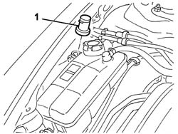

5050A14 reservoir plug (in engine bay) or windscreen washer fluid level sensor - check and top up if necessary
- Path
- Procedures > 50 AUXILIARY UNITS > 5050 SCREEN WASHERS AND HEADLAMP WASH/WIPE > 5050A windscreen and headlamp washer reservoir > 5050A14 reservoir plug (in engine bay) or windscreen washer fluid level sensor - check and top up if necessary
- Kind
- repair procedure (removal / refitting; the operation number is the code)
- Applies to
- all engines; all production periods
- Interactive page
- https://sloeber94.github.io/elrnDB-a147/en/#/3025458
Applies to: engines: 1.9 JTD 16V; all production periods
Applies to: all engines; all production periods
Open the bonnet lid.
1. Remove the cap from the tank.

Applies to: all engines; all production periods
Check that the cap and filler are not damaged and that the filter is not blocked.
Fit the cap and filler in the housing.
Applies to: engines: 1.9 JTD 16V; all production periods